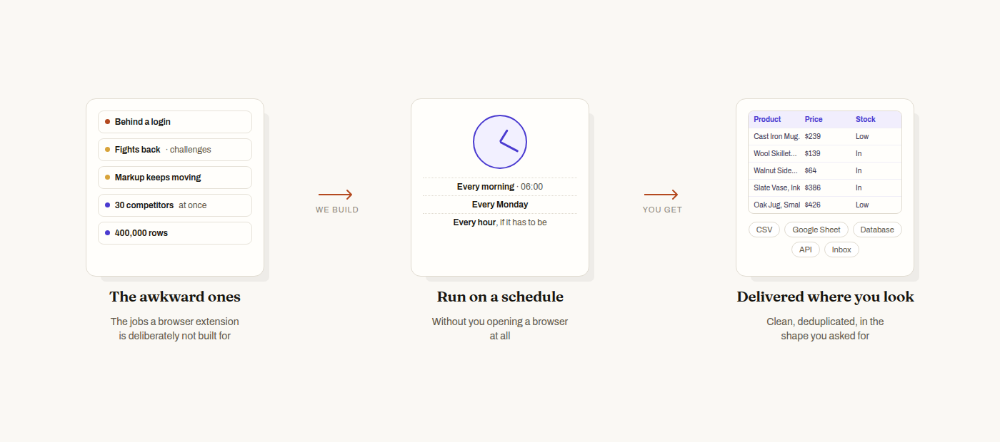

Bespoke work
A site behind a login. One that fights back. Thirty competitors, priced every morning before you get in. We build those as projects — and tell you before you pay if it can't be done properly.

HOW IT WORKS You describe the awkward part. We build the thing that runs without you, and put the result where you already look.
The extension is deliberately limited to what your browser has already rendered. These are the jobs on the other side of that line.
Dashboards, supplier portals, membership directories, internal tools you have every right to read but no export button for. Credentials stay with you where the job allows it, and are handled as secrets where it doesn't.
Bot challenges, aggressive rate limits, markup that changes shape every few weeks, data that only arrives from a private API. These need something sturdier than a content script, and monitoring so you hear about a break from us rather than from a blank spreadsheet.
Every morning, every Monday, every hour. Prices, stock, listings, jobs, tenders, rankings — anything whose value is that it is current. You stop remembering to run it.
Hundreds of thousands of rows. Or the same fields taken from thirty competitors, deduplicated and reconciled into one table with a consistent schema, which is usually the harder half.
A CSV or Excel file, a Google Sheet that updates itself, rows appended to your database, a JSON endpoint, or a file dropped in S3 or Drive. A report nobody opens is not a deliverable.
A single list you need this week, cleanly, without learning a tool. Often the cheapest thing on this page.
Four things. It is usually enough for a yes, a no, or a number.
Email support@magicscraper.app. Nothing you send is shared with anyone, and quoting costs nothing.
Including the answers that lose us the job.
If a site can't be collected lawfully or reliably, we say so and explain why. That is worth more to you than the invoice is to us, and it is the reason to ask us rather than whoever said yes to everything.
Whether data may be collected from a given site is a question of that site's terms, its
robots.txt, copyright and database rights, and — where the rows are
about people — data-protection law. We will not build something that bypasses
access controls or that hammers infrastructure to the point of damage.
We'll also tell you when the free extension already does it. Plenty of jobs that feel like projects are ten minutes with the Chrome extension and no invoice at all.
It depends almost entirely on how hard the site fights and how often it has to run. A single list from a cooperative site is small. A logged-in portal with bot protection, collected hourly and reconciled against two other sources, is not. Tell us the budget you have in mind and we'll tell you honestly whether the scope fits it.
A one-off extraction is usually days rather than weeks. A scheduled pipeline takes longer because it has to survive the site changing — that is most of the work, and skipping it is why scrapers rot.
The data is yours the moment it is collected. Code ownership is agreed per project; say what you need and it goes in writing before anything starts.
It will. Scheduled work includes monitoring so a break is noticed and fixed, rather than discovered weeks later by someone reading a stale spreadsheet. Terms are agreed per project.
Only where there is a lawful basis for it, and we'll ask about that early. If the rows are about identifiable people, that question decides whether the project happens at all.